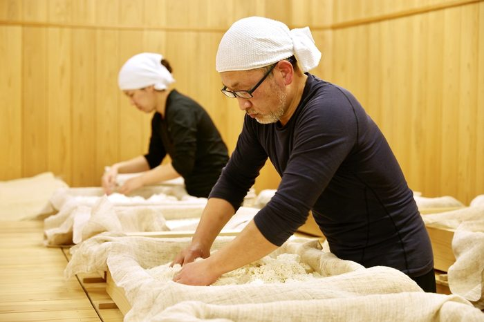
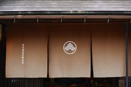
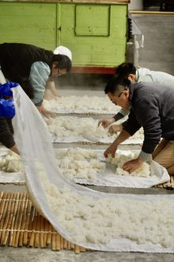
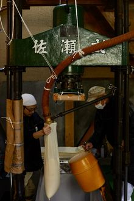
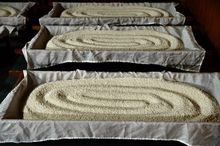
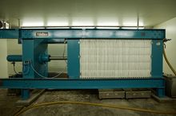

Breweries
There are around 1,100 sake breweries left in Japan. Most are small — family-run, regional, making sake you'll never see outside the prefecture they're in.
This is where we write about them — the people who run them, the ones taking the job in a different direction, and the ones quietly doing what they've always done.
Featured

Toji profile Mie
The man who runs the numbers at Hayakawa
Every morning before the kurabito arrive, the toji walks to the lab with a hydrometer and a notebook. Forty years in, the notebook is still handwritten.

Inside the muro Process
Forty-eight hours in the koji room
The cedar room stays at 30°C and 60% humidity for two days straight. Someone has to be inside it every few hours, turning the rice by hand.

Brewery visit Hyōgo
The kura with the brick chimney
Built in 1887, rebuilt twice, still making sake in the same spot on the same river. The chimney hasn't been used in decades but nobody wants to take it down.
All stories

Primer
What a kura actually is

Process
Why steamed rice is cooled by hand

Process
The Sase fune press, and why some kura still use it

Craft
The furrows in the koji are not decoration

Modern vs traditional
The Yabuta press changed everything. Some kura refuse it
More stories coming.